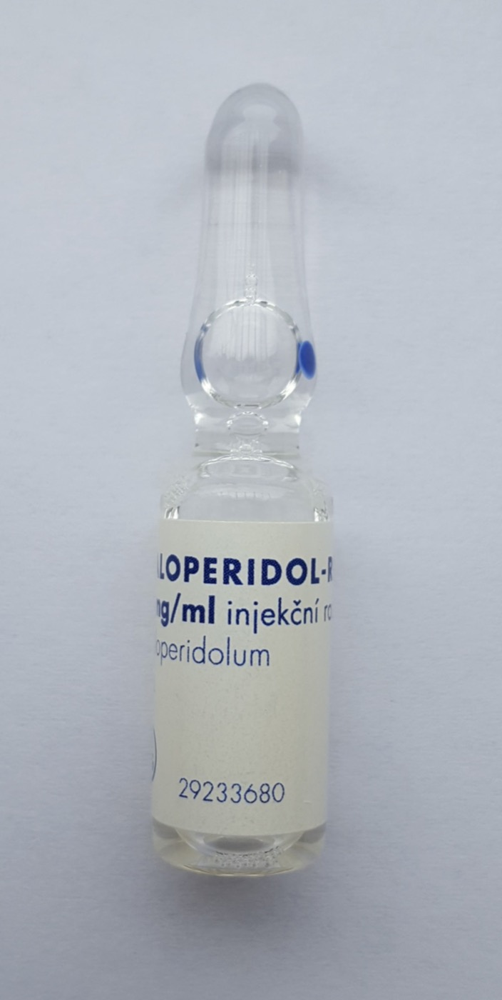

Página 13 · Eixo humor — o fecho
Psicose puerperal: a emergência
Os três mitos são falsos. A ideação infanticida também ocorre na depressão grave; a psicose é o quadro mais grave (uma emergência); e o divisor blues × depressão é a duração, não só a intensidade. Desmontá-los é o mapa desta síntese.
A psicose puerperal: a mais grave, mais rara e mais precoce
A psicose puerperal é o quadro mais grave de todos — e, ao mesmo tempo, o mais raro. É também o mais precoce das três entidades: geralmente acontece no 1º mês e, principalmente, na 1ª semana de pós-parto. Enquanto o blues começa nos primeiros dias e some, e a depressão se instala e persiste por semanas, a psicose irrompe cedo e forte.
A ruptura com a realidade: delírio e alucinações
O que define a psicose e a separa das outras duas é a ruptura com a realidade. A paciente pode ter alguns dos sintomas do transtorno depressivo, mas apresenta também delírio e alucinações — principalmente persecutórias e auditivas. Pode acreditar que o bebê tem algum poder mágico, que é um ser místico. Ela rompe com a realidade, mas não necessariamente o tempo todo — pode ficar oscilando nesse cenário, com momentos de aparente lucidez entremeados. Essa oscilação é traiçoeira: um intervalo de aparente normalidade não afasta a emergência.
A emergência: risco de suicídio e de infanticídio → internação, restrição, antipsicótico
A psicose puerperal é uma condição considerada EMERGÊNCIA. Cursa com alto risco de suicídio E alto risco de infanticídio — os dois. Por isso, três condutas são inegociáveis: a paciente não pode ficar sozinha com o bebê, sem supervisão; tem de estar internada; e é preciso restringir o contato com o bebê. O tratamento medicamentoso vai precisar de antipsicótico — o haloperidol é o mais comumente utilizado. Todo o manejo é diferenciado pelo risco grande de auto e heteroagressão: é a única das três entidades que se conduz como urgência psiquiátrica.
O quadro comparativo das três entidades
Consolidando o espectro numa linha: as três se distinguem por prevalência, início, duração, gravidade, preservação do autocuidado, sintomas-chave, risco de suicídio/infanticídio e tratamento. Blues é o comum, benigno, autolimitado, com cuidado preservado e só suporte; depressão é persistente, de leve a grave, tratada por degraus; psicose é a rara, precoce, com ruptura da realidade, emergência, tratada com internação e antipsicótico.
| Eixo | Baby blues | Depressão pós-parto | Psicose puerperal |
|---|---|---|---|
| Prevalência | ~50–80% (o mais comum) | menos frequente que o blues | a mais rara |
| Início | primeiros dias | ≥2 semanas (persistente) | 1ª semana / 1º mês (a mais precoce) |
| Duração | autolimitado, ≤2 semanas | persistente, ≥2 semanas | emergência (sem autolimitação) |
| Gravidade | benigno | leve a grave | a mais grave |
| Autocuidado / cuidado com o bebê | PRESERVADOS | pode comprometer | rompe com a realidade |
| Sintomas-chave | choro fácil, labilidade, ansiedade | anedonia, labilidade, sono/apetite, irritabilidade | delírio, alucinações persecutórias/auditivas, crença de poder místico do bebê |
| Risco suicídio / infanticídio | baixo | pensamento infanticida possível na forma grave | ALTO risco de suicídio E infanticídio |
| Tratamento | suporte (sem farmacológico) | leve = psicoterapia; mod/grave = + ISRS; refratário = ECT | internação + restrição de contato + antipsicótico (haloperidol) |
- Prevalência
- ~50–80% (o mais comum)
- Início
- primeiros dias
- Duração
- autolimitado, ≤2 semanas
- Gravidade
- benigno
- Cuidado
- preservado
- Sintomas
- choro fácil, labilidade, ansiedade
- Risco
- baixo
- Tratamento
- suporte (sem fármaco)
- Prevalência
- menos frequente que o blues
- Início
- ≥2 semanas (persistente)
- Duração
- persistente, ≥2 semanas
- Gravidade
- leve a grave
- Cuidado
- pode comprometer
- Sintomas
- anedonia, labilidade, sono/apetite, irritabilidade
- Risco
- pensamento infanticida possível na forma grave
- Tratamento
- leve = psicoterapia; mod/grave = + ISRS; refratário = ECT
- Prevalência
- a mais rara
- Início
- 1ª semana / 1º mês (a mais precoce)
- Duração
- emergência
- Gravidade
- a mais grave
- Cuidado
- rompe com a realidade
- Sintomas
- delírio, alucinações persecutórias/auditivas, crença de poder místico do bebê
- Risco
- ALTO: suicídio E infanticídio
- Tratamento
- internação + restrição de contato + antipsicótico (haloperidol)
A resolução da SES: só o cognitivo — dificuldade de concentração
Voltando à questão SES plantada na abertura do eixo: "quais sinais e sintomas cognitivos fazem parte do diagnóstico de depressão pós-parto?". A palavra-chave é cognitivo — que tem a ver com raciocínio e tomada de decisão. Entre as opções (dificuldade de concentração, choro, ansiedade, vontade de machucar o bebê, fadiga, cansaço), a única resposta possível é a dificuldade de concentração. Choro, ansiedade, fadiga e a vontade de machucar o bebê não são sintomas cognitivos — são afetivos, somáticos ou ideativos, não do domínio do raciocínio. É uma questão que testa se o aluno sabe o que "cognitivo" significa, não se conhece a depressão.
A resolução do resumo A–D: infanticídio não exclusivo; duração, não só intensidade
A questão-resumo (A–D) reúne as pegadinhas finais:
- (A) "Pensamentos infanticidas são exclusivos da psicose" — falso. A vontade de machucar o bebê / pensamento infanticida não é exclusiva da psicose: pode ocorrer também na depressão grave. Este é um ponto importante e contraintuitivo.
- (B) "Psicose puerperal é um quadro leve" — falso. É o mais grave de todos.
- (C) — correta: o baby blues é bastante frequente (50% a 80%), começa nos primeiros dias, melhora em 2 semanas, cursa com labilidade e choro, e o tratamento é suporte — sem nenhum tratamento farmacológico recomendado.
- (D) "A depressão pós-parto difere do blues só pela intensidade" — falso. Difere não só pela intensidade, mas também pela duração (temporalidade).

O ponto não é "tratar em casa": é reconhecer a emergência, indicar internação, proteger mãe e bebê com restrição de contato e usar antipsicótico dentro de um manejo supervisionado. No rótulo lê-se "HALOPERIDOL" — não confundir com decanoato (depósito).
Wesalius, Wikimedia Commons — Haloperidol vial. Licença CC BY 4.0 · fonte
- TEV6 semanas · pico precoce
- Peri-partoreintrodução 8–12h
- Baby blues≤ 2 semanas
- Depressão≥ 2 semanas
- Psicose1ª semana / 1º mês
Quiz gold — as duas questões-âncora
Q1 (SES 2026). Quais dos sinais e sintomas COGNITIVOS podem fazer parte do diagnóstico de depressão pós-parto?
- A — o domínio do raciocínio. "Cognitivo" diz respeito a raciocínio e tomada de decisão — e só a dificuldade de concentração pertence a esse domínio.
- B. É sintoma afetivo, não cognitivo.
- C. É ideação (e, atenção, não é exclusiva da psicose — ocorre também na depressão grave), mas não é sintoma cognitivo.
- D. É sintoma somático. A questão pune quem associa "cognitivo" a "qualquer sintoma da depressão" — o filtro é o raciocínio, e só a concentração passa.
Q2 (resumo A–D). Assinale a alternativa CORRETA:
- C — o baby blues. Comum, precoce, autolimitado em ~2 semanas e conduzido só com suporte.
- A. Pegadinha mais importante do fecho: a ideação infanticida também ocorre na depressão grave — não é assinatura exclusiva da psicose.
- B. Inverte a gravidade: a psicose é o quadro mais grave, uma emergência.
- D. Reduz a diferença à intensidade, quando o divisor real é a duração (blues ≤2 sem × depressão ≥2 sem).
Encerrado o bônus. O comparativo das três entidades fica como card consultável, e a Linha do Tempo do Puerpério está completa — do pico precoce do TEV à emergência da psicose. Volte ao hub para revisitar qualquer eixo.